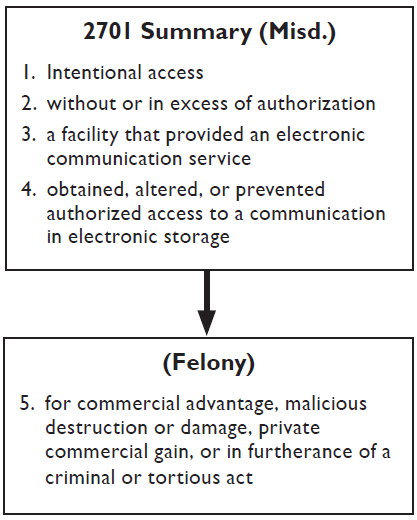
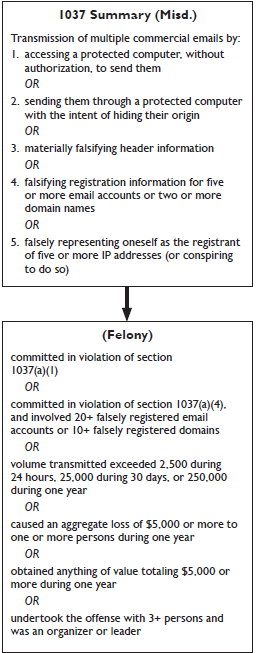

Chapter 3
Other Network Crime Statutes
A. Unlawful Access to Stored Communications: 18 U.S.C. § 2701

Section 2701 focuses on protecting email and voicemail from unauthorized access. See H.R. Rep. No. 647, 99th Cong., 2d Sess., at 63 (1986). At heart, section 2701 protects the confidentiality, integrity, and availability of these communications stored by providers of electronic communication services pending the ultimate delivery to their intended recipients.
A charge under section has four essential elements. requires proof of one additional element.
Title 18, United States Code, Section 2701(a) provides:
Except as provided in subsection (c) of this section whoever—
(1) intentionally accesses without authorization a facility through which an electronic communication service is provided; or
(2) intentionally exceeds an authorization to access that facility;
and thereby obtains, alters, or prevents authorized access to a wire or electronic communication while it is in electronic storage in such system shall be punished as provided in subsection (b) of this section.
1. Intentional Access
The mens rea element of a section 2701 violation is that the defendant’s unauthorized access (or access in excess of authorization) was intentional. Although no court has analyzed the mens rea requirement for this section, courts have addressed the mens rea requirement for similar language in 18 U.S.C. § 1030. See United States v. Sablan, 92 F.3d 865, 867-68 (9th Cir. 1996); United States v. Morris, 928 F.2d 504, 508-09 (2d Cir. 1991). In Sablan, the Ninth Circuit analyzed the wording, structure, and purpose of what was then section 1030(a)(5)(A) and concluded that the “intentionally” language modified only the “accesses without authorization” portion of that statute. Sablan, 92 F.3d at 868. The same reasoning applies to section 2701.
The statute does not define the term “access”; please see page 37 for a discussion of this term under section 1030. In a typical criminal case, in which a defendant will have logged on to a system and obtained, altered, or deleted email or voicemail, there will be no question that the defendant has intentionally accessed a facility.
2. Without or In Excess of Authorization
The second element of section 2701 requires proof that the defendant either was not authorized to access the facility or that the defendant exceeded authorized access. This element mirrors the “without authorization” and “exceeds authorized access” language of 18 U.S.C. § 1030. For the discussion of the meaning of these terms, please see page 5.
3. Facility Trough Which an Electronic Communication Service Is Provided
The third element of a section 2701 violation is that the defendant accessed a facility through which an electronic communication service (ECS) was provided. An ECS is “any service which provides to users thereof the ability to send or receive wire or electronic communications.” 18 U.S.C. § 2510(15). In other words, an ECS is a facility that others use to transmit communications to third parties. Section 2701 incorporates that definition. See 18 U.S.C. § 2711(1). “[T]elephone companies and electronic mail companies” generally act as providers of electronic communication services. See S. Rep. No. 99541 (1986), reprinted in 1986 U.S.C.C.A.N. 3555, 3568. A provider of email accounts over the Internet is a provider of ECS, see FTC v. Netscape Communications Corp., 196 F.R.D. 559, 560 (N.D. Cal. 2000), as is the host of an electronic bulletin board. See Konop v. Hawaiian Airlines, Inc., 302 F.3d 868, 879-80 (9th Cir. 2002). Tus, computers that provide such services are facilities through which an ECS is provided. See Snow v. DirecTV, Inc., 450 F.3d 1314 (11th Cir. 2006) (upholding a dismissal for failure to state a claim, where defendants used computers to access a website generally available to the public).
However, not every computer or device connected to a communication system is a facility through which an ECS is provided: a computer or device belonging to an end-user of an ECS is not such a facility. For example, the Eleventh Circuit has held that hacking into a home computer does not implicate section 2701 because a home computer generally does not provide an ECS to others. See United States v. Steiger, 318 F.3d 1039, 1049 (11th Cir. 2003). Similarly, the court in State Wide Photocopy Corp. v. Tokai Fin. Services, Inc., 909 F. Supp. 137, 145 (S.D.N.Y. 1995), and the mere use of business computers and fax machines does not necessarily constitute the activity of an ECS. Courts have also rejected the notion that maintaining a website or merely utilizing Internet access constitutes providing an ECS. See Dyer v. Northwest Airlines Corp., 334 F. Supp. 2d 1196, 1999 (D.N.D. 2004) (airline selling travel services over the Internet is not a provider of ECS); Crowley v. Cybersource Corp., 166 F. Supp. 2d 1263, 1270 (N.D. Cal. 2001) (Amazon.com is not a provider of ECS).
4. Obtained, Altered, or Prevented Authorized Access to a Communication in Electronic Storage
The fourth element of a section 2701 violation is that the defendant obtained, altered, or prevented authorized access to a wire or electronic communication while it was in “electronic storage.” This element has three components. The first component, that the defendant “obtained, altered, or prevented authorized access to,” means that a defendant must acquire a stored communication, modify a stored communication, or prevent proper access to a stored communication.
The Ninth Circuit, when distinguishing access under section 2701 from an interception under the Wiretap Act, misinterpreted this component. In United States v. Smith, 155 F.3d 1051 (9th Cir. 1998), the Ninth Circuit stated that “[t]he word ‘intercept’ entails actually acquiring the contents of a communication, whereas the word ‘access’ merely involves being in position to acquire the contents of a communication.” Smith, 155 F.3d at 1058 (emphasis in original). It then opined that one might violate section 2701 by using a purloined password to log on to a voicemail system without ever obtaining the contents of any voicemail. See id. This reading of the statute should be given little weight. Not only did the Court’s reasoning rely on an effort to give meaning to text in the Wiretap Act that Congress has since repealed (18 U.S.C. § 2510(1)), see USA PATRIOT Act, Pub. L. No. 107-56, § 209(1)(A), but it ignores this element of the offense—i.e., that the communication be “obtained,” “altered,” or made unavailable.
The second component, that the conduct involved a “wire or electronic communication,” needs little further explanation. Wire communications are essentially communications containing the human voice that are transmitted in part by a wire or other similar method. See 18 U.S.C. § 2510(1), (18). In addition, “electronic communication” is defined broadly in 18 U.S.C. § 2510(12) and includes most electric or electronic signals that are not wire communications. For example, voicemail is a wire communication, and email and other typical Internet communications that do not contain the human voice are electronic communications.
The final component of this element is that the communication was in “electronic storage.” The term “electronic storage” has a narrow, statutorily defined meaning; it does not simply mean storage of information by electronic means. Instead, “electronic storage” means “(A) any temporary, intermediate storage of a wire or electronic communication incidental to the electronic transmission thereof; and (B) any storage of such communication by an electronic communication service for purposes of backup protection of such communication.” 18 U.S.C. § 2510(17). As traditionally understood by the government, “electronic storage” refers only to temporary storage, made in the course of transmission, by a provider of electronic communications service and to backups of such intermediate communications. If the communication has been received by a recipient’s service provider but has not yet been accessed by the recipient, it is in “electronic storage.” For example, a copy of an email or voicemail is in “electronic storage” only if it is at an intermediate point in its transmission and has not yet been retrieved by its intended recipient (e.g., undelivered email). When the recipient retrieves the email or voicemail, the communication reaches its final destination. If the recipient chooses to retain a copy of the communication on the service provider’s system, the retained copy is no longer in “electronic storage” because it is no longer in “temporary, intermediate storage . . . incidental to . . . electronic transmission,” and neither is it a backup of such a communication. See Fraser v. Nationwide Mut. Ins. Co., 135 F. Supp. 2d 623, 635-36 (E.D. Pa. 2001), af’d in part, 352 F.3d 107, 114 (3d Cir. 2004). Instead, it is treated like any other material stored by a user under provisions governing remote computing services. See H.R. Rep. No. 647, 99th Cong., 2d Sess., at 65 (1986) (stating that when a recipient has retrieved an email message and chooses to leave it in storage with the service provider, the email is protected under a provision of 18 U.S.C. § 2702 applicable to remote computing services).
The Ninth Circuit in Teofel v. Farey-Jones, 359 F.3d 1066 (9th Cir. 2004), rejected this long-standing narrow interpretation of “electronic storage.” In Teofel, the Ninth Circuit held that email messages were in electronic storage regardless of whether they had been previously accessed. Although the Ninth Circuit did not dispute that previously accessed email was not in temporary, intermediate storage within the meaning of section 2510(17)(A), it insisted that previously accessed email fell within the scope of the “backup” portion of the definition of “electronic storage.” Id. at 1075. Under Teofel, essentially all stored wire or electronic communications are in “electronic storage.” Although prosecutors within the Ninth Circuit are bound by Teofel, law enforcement elsewhere may continue to apply the traditional narrow interpretation of “electronic storage,” even when the data sought is within the Ninth Circuit. Recent lower court decisions addressing the scope of “electronic storage” have split between the traditional interpretation and the Teofel approach. Compare United States v. Weaver, 636 F. Supp. 2d 769, 772-73 (C.D. Ill. 2009) (rejecting Teofel), and Bansal v. Russ, 513 F. Supp. 2d 264, 276 (E.D. Pa. 2007) (holding that access to opened email in account held by non-public service provider did not violate the Stored Communications Act), with Bailey v. Bailey, 2008 WL 324156, at *6 (E.D. Mich. Feb. 6, 2008) (endorsing Teofel), and Cardinal Health 414, Inc. v. Adams, 582 F. Supp. 2d 967, 976 n.2 (M.D. Tenn. 2008) (same).
If Teofel’s broad interpretation of “electronic storage” were correct, prosecutions under section 2701 would be substantially less difficult, as it can be difficult to prove that communications fall within the traditional narrow interpretation of “electronic storage” in some cases. However, CCIPS continues to question whether Teofel was correctly decided, since little reason exists for treating old email differently than other material a user may choose to store on a network. If you are considering a prosecution under section 2701 that relies on the interpretation used in Teofel, we urge you to contact CCIPS for consultation.
5. Purpose
Felony charges require proof of one additional element: that the defendant acted “for purposes of commercial advantage, malicious destruction or damage, or private commercial gain, or in furtherance of any criminal or tortious act.” 18 U.S.C. § 2701(b)(1).12 The Wiretap Act also uses such language as an exception to when a party may consent to interception of their communications. See 18 U.S.C. § 2511(2)(d). In the Wiretap Act context, one appellate court has stated that this language is operative when a prohibited purpose is either the subject’s primary motivation or a determinative factor in the subject’s motivation. See United States v. Cassiere, 4 F.3d 1006, 1021 (1st Cir. 1993). Naturally, the wording “in furtherance of any criminal or tortious act” means an act other than the unlawful access to stored communications itself. See Boddie v. American Broadcasting Co., 731 F.2d 333, 339 (6th Cir. 1984).
6. Exceptions
Section 2701(c) provides three statutory exceptions to a violation. First, the section does not apply to “the person or entity providing a wire or electronic communication service.” 18 U.S.C. § 2701(c)(1). Tus, unlike in the Wiretap Act context, service providers cannot violate section 2701, regardless of their motives in accessing stored communications. See United States v. Councilman, 418 F.3d 67, 81-82 (1st Cir. 2004) (en banc). Second, the section does not apply to conduct authorized by a user “with respect to a communication of or intended for that user.” 18 U.S.C. § 2701(c)(2). See Konop v. Hawaiian Airlines, Inc., 302 F.3d 868, 880 (9th Cir. 2002) (interpreting “user” narrowly to exclude someone who was properly authorized to access an electronic bulletin board, but who had not actually done so). Third, section 2701 does not apply to conduct authorized by other sections of the Act or the Wiretap Act. See 18 U.S.C. § 2701(c)(3). Although no court has yet addressed the role of these exceptions in a criminal prosecution, prosecutors should treat them as creating affirmative defenses rather than statutory elements to be negated. See generally United States v. Kloess, 251 F.3d 941, 944-46 (11th Cir. 2001) (discussing distinctions between elements of a crime and affirmative defenses created by statutory exceptions).
7. Penalties
The penalties for unlawful access to stored communications fall into three categories. For first-time violations not committed for a specified improper purpose (that is, not committed “for purposes of commercial advantage, malicious destruction or damage, or private commercial gain, or in furtherance of any criminal or tortious act”), the maximum penalty is one year imprisonment and a $100,000 fine. See 18 U.S.C. §§ 2701(b)(2)(A), 3571(b)(5). For repeat violations not committed for an improper purpose, or for first-time violations committed for an improper purpose, the maximum penalty is five years’ imprisonment and a $250,000 fine. See 18 U.S.C. §§ 2701(b)(1)(A), (b)(2)(B), 3571(b)(3). For repeat violations committed for an improper purpose, the maximum penalty is ten years’ imprisonment and a $250,000 fine. See 18 U.S.C. §§ 2701(b)(1)(B), 3571(b)(3).
8. Historical Notes
Since its enactment in 1986, there have been very few prosecutions under section 2701. There are at least three reasons for this lack. First, prior to the Homeland Security Act of 2002, Pub. L. No. 107-296, 116 Stat. 2135 (2002), all first-time violations of this section were misdemeanors. Tat Act, however, increased the maximum penalty for first-time violations to five years when the offense is committed “for purposes of commercial advantage, malicious destruction or damage, or private commercial gain, or in furtherance of any criminal or tortious act in violation of the Constitution or laws of the United States or any State.” 18 U.S.C. § 2701(b)(1). Second, one element of prosecutions can be difficult to prove: that the defendant obtained, altered, or prevented authorized access to communications in “electronic storage,” a term that is narrowly defined in 18 U.S.C. § 2510(17) and that has traditionally been interpreted to include only communications that have not yet been accessed by their intended recipient. Third, many violations of section 2701 also involve conduct that violates 18 U.S.C. § 1030. Because prosecutions under section 1030 do not involve proof that a communication is in “electronic storage,” it will often be easier for the government to prove a violation of section 1030 than section 2701.
B. Identity Theft: 18 U.S.C. § 1028(a)(7)
1. Application to Network Crimes
Network intrusions can compromise the privacy of individuals if data about them or their transactions resides on the victim network. Such cases commonly also involve violations of identity theft statutes. For a more detailed treatment of identity theft, see U.S. Department of Justice, Identity Theft and Social Security Fraud (Office of Legal Education 2004).
Several federal laws apply to identity theft, including 18 U.S.C. § 1028. Tat section criminalizes eight types of conduct involving fraudulent identification documents or the unlawful use of identification information. Section 1028(a)(7), enacted as part of the Identity Theft and Assumption
Deterrence Act of 1998 and amended in 2004 by the Identity Theft Penalty Enhancement Act, will apply to some network crime cases. See, e.g., United States v. Sutclife, 505 F.3d 944 (9th Cir. 2007) (affirming conviction under section 1028(a)(7) for posting stolen social security numbers on website).
Title 18, United States Code, Section 1028(a)(7) provides:
Whoever, in a circumstance described in subsection (c) of this section— . . .
(7) knowingly transfers, possesses, or uses, without lawful authority, a means of identification of another person with the intent to commit, or to aid or abet, or in connection with, any unlawful activity that constitutes a violation of Federal law, or that constitutes a felony under any applicable State or local law . . . shall be punished as provided in subsection (b) of this section.
“Person,” as it is used in the statute, refers to individuals both living and dead. See United States v. Kowal, 527 F.3d 741, 745-77 (8th Cir. 2008); United States v. Jiminez, 507 F.3d 13, 22 (1st Cir. 2007) (“[T]he natural reading of the word ‘person’ in the phrase ‘means of identification of another person’ includes persons deceased.”); United States v. Maciel-Alcala, 2008 WL 4369299, at *23 (C.D. Cal. 2008); United States v. Shain, 2008 WL 2940641, at *1 (W.D. Wash. 2008).13
The term “means of identification” refers to “any name or number that may be used, alone or in conjunction with any other information, to identify a specific individual.” 18 U.S.C. § 1028(d)(7). The statute provides several specific examples, such as name; social security number, date of birth, government issued driver’s license, and other numbers; unique biometric data, such as fingerprints, voice print, retina or iris image, or other unique physical representation; unique electronic identification number, address, or routing code; and telecommunication identifying information or access device. Id.
There is little controversy about classifying a unique identifier, such as a social security number, as a “means of identification.” However, courts disagree about whether non-unique identifiers—including those, such as names and birthdates, that are included in the statutory definition—qualify as a “means of identification” when standing alone. Under one reading, the answer is yes—a piece of information is a “means of identification,” even if it does not pinpoint a specific person on its own, as long as the information could potentially be coupled with other information to do so. See 18 U.S.C. § 1028(d)(7) (means of identification includes names or numbers that “may be used . . . in conjunction with other information [] to identify a specific individual”) (emphasis added). In accordance with this interpretation, several courts have indicated that a name, standing alone, constitutes a “means of identification.” See United States v. Silva, 554 F.3d 13, 23 n.14 (1st Cir. 2009) (defendant’s argument that forged doctor’s signature did not constitute “means of identification” “runs afoul of the plain language of the statute,” which specifies that “any . . . name” is within scope of definition) (omission in original); United States v. Blixt, 548 F.3d 882, 886 (9th Cir. 2008) (“[W]e hold . . . that forging another’s signature constitutes the use of that person’s name and thus qualifies as a ‘means of identification.’”); United States v. Hanson, 2009 WL 2460887, at *5 (C.D. Cal. 2009) (“As the statutory definition makes clear, a name alone is a ‘means of identification.’”).
On the other hand, the Fourth Circuit has held that non-unique identifiers are not “means of identification” unless they are actually used in conjunction with additional information that permits the identification of a specific person. See United States v. Mitchell, 518 F.3d 230 (4th Cir. 2008). In Mitchell, the defendant possessed a false Georgia driver’s license bearing the name Marcus Jackson. Other people in the state of Georgia had this name, and the defendant selected it after seeing it in a phone book. However, the additional information on the license, such as address and date of birth, did not match those of any actual Marcus Jackson. Id. at 232-33. The court reasoned, “[T]he distinguishing feature of a means of identification of another person is that it must identify a specific individual,” id. at 235, whereas names or dates of birth are “likely not ... sufficiently unique to identify a specific individual because many persons have the same [one,]” id. at 234. Because the information used by the defendant, taken as a whole, did not identify a specific person, the court held that the defendant did not use a “means of identification” and reversed his conviction. Id. at 236; see also id. at 234 (non-unique identifiers listed in the statutory definition, such as names, do not “qualify as a means of identification” unless “coupled with other information to identify a specific individual”).14
In any event, prosecutors pursuing charges under section 1028(a)(7) must be careful to ensure that the evidence will permit them to meet their burden with regard to intent. In Flores-Figueroa v. United States, 129 S. Ct. 1886, 1889 (2009), the Supreme Court held that section 1028A, which criminalizes “knowingly transfer[ing], possess[ing], or us[ing], without lawful authority, a means of identification of another person,” requires the government to show that “the defendant knew that the means of identification at issue belonged to another person.” Id. at 1894. Because section 1028(a)(7)’s language is identical to the portion of section 1028A at issue in Flores-Figueroa, compare 18 U.S.C. § 1028(a)(7), with 18 U.S.C. § 1028A(a)(1), prosecutors should be prepared to make the evidentiary showing required by that case in section 1028(a)(7) prosecutions.
Section 1028(a)(7) also requires a predicate offense, much like section 1028A (discussed below). However, the scope of section 1028(a)(7) is much broader than that of section 1028A. Section 1028A depends solely on certain enumerated federal felonies. See 18 U.S.C. § 1028A(a)(1). Section 1028(a)(7) charges, on the other hand, may be based on any federal violation (felony or misdemeanor) or any local or state felony. See 18 U.S.C. § 1028(a)(7).
In most cases, the government will be required to prove that the “production, transfer, possession, or use prohibited by [section 1028] is in or affects interstate commerce” in order to invoke federal jurisdiction. 18 U.S.C. § 1028(c)(3) (A); see also 18 U.S.C. § 1028(c)(3) (identifying other jurisdictional hooks for section 1028 violations). Courts have interpreted this jurisdictional provision broadly, holding that the government must prove only a “minimal nexus” to interstate commerce in order to sustain a conviction. This standard is satisfied if the government proves that the defendant had the intent to accomplish acts that, if successful, would have affected interstate or foreign commerce; however, the government need not prove that the defendant had knowledge of the potential effects on interstate commerce when he committed the offense. United States v. Klopf, 423 F.3d 1228, 1237-38 (11th Cir. 2005); United States v. Pearce, 65 F.3d 22, 25 (4th Cir. 1995); see also United States v. Jackson, 155 F.3d 942, 946-47 (8th Cir. 1998) (rejecting defendant’s argument that section 1028 conviction required showing that stolen identification document traveled in interstate commerce; jurisdictional requirement satisfied by showing that “possession of the [document] was integral to his scheme to defraud businesses . . . operating in interstate commerce”); United States v. Berry, 583 F. Supp. 2d 749 (E.D. Va. 2008) (“[A]ll that is required of a conviction under [section 1028] is that the fraudulent use of the social security number occur as part of a plan or operation that affected interstate commerce.”). But see United States v. Della Rose, 278 F. Supp. 2d 928 (N.D. Ill. 2003) (evidence insufficient to support conviction where false identification was used to cash an intrastate check at a bank and government presented “no evidence of any out-of-state involvement”).
An offender who violates section 1028(a)(7) is subject to a fine and up to 15 years’ imprisonment if, as a result of the crime, he obtains anything of value aggregating $1,000 or more during a one-year period. 18 U.S.C. § 1028(b)(1) (D). In most other cases, the maximum term of imprisonment is 5 years. 18 U.S.C. § 1028(b)(2)(B). However, the court may impose higher sentences if the offense facilitates a drug trafficking crime, a crime of violence, or an act of terrorism, or if the offender has a previous conviction under this section. 18 U.S.C. § 1028(b)(3)-(4).
In addition, a court may order the offender to pay restitution to the victims of the identity theft in an amount that is “equal to the value of the time reasonably spent by the victim in an attempt to remediate the intended or actual harm” caused by the offense. 18 U.S.C. § 3663(b)(6). This provision, added to 18 U.S.C. § 3663 by the Identity Theft Enforcement and Restitution Act of 2008, ensures that victims of identity theft can be compensated for the time and expense associated with, among other things, correcting their credit reports or fighting fraudulent charges. Cf. United States v. Havens, 424 F.3d 535, 539 (7th Cir. 2005) (rejecting, prior to amendment of 18 U.S.C. § 3663, argument that identity theft victim was entitled to reimbursement for time spent clearing her credit because it would take the restitution statute “too far”).
C. Aggravated Identity Theft: 18 U.S.C. § 1028A
1. Application to Network Crimes
The Identity Theft Penalty Enhancement Act, which took effect July 15, 2004, established a new offense of aggravated identity theft. Section 1028A applies when a defendant “knowingly transfers, possesses, or uses, without lawful authority, a means of identification of another person” during and in relation to any felony violation of certain enumerated federal offenses, including 18 U.S.C. §§ 1028 (but not 1028(a)(7)), 1029, 1030, 1037, and 1343. See 18 U.S.C. § 1028A(a)(1). In other words, section 1028A is often applicable in the context of computer crime. For example, “carders,” who sell or trade stolen credit or debit card account information on online forums, or “phishers,” who obtain the same type of information via fraudulent emails, often violate section 1029, a predicate crime for a section 1028A charge. Similarly, defendants who engage in hacking activity in violation of section 1030 and obtain identity or account information often may also violate this section.
“Person,” as used in section 1028A, refers to individuals both living and dead, and a defendant violates the statute regardless of whether the individual whose identity is stolen is alive or deceased at the time of the offense. See United States v. Kowal, 527 F.3d 741, 745-77 (8th Cir. 2008); United States v. Jiminez, 507 F.3d 13, 22 (1st Cir. 2007) (“[T]he natural reading of the word ‘person’ in the phrase ‘means of identification of another person’ includes persons deceased.”); United States v. Maciel-Alcala, 2008 WL 4369299, at *23 (C.D. Cal. 2008); United States v. Shain, 2008 WL 2940641, at *1 (W.D. Wash. 2008).
The definition of “means of identification” is found at 18 U.S.C. § 1028(d)
(7) and encompasses “any name or number that may be used, alone or in conjunction with any other information, to identify a specific individual.” As discussed above in the context of section 1028(a)(7), it is not entirely clear whether a non-unique identifier, such as a name, qualifies as a “means of identification” when standing alone or whether it must be combined with additional information that permits the identification of a specific individual (see page 96 above).
After Congress enacted section 1028A, the courts of appeals disagreed about whether the government must prove that the defendant knew that the means of identification at issue actually belonged to someone else in order to obtain a conviction for aggravated identity theft. Compare United States v. Godin, 534 F.3d 51 (1st Cir. 2008) (defendant must know means of identification belongs to another person); United States v. Miranda-Lopez, 532 F.3d 1034 (9th Cir. 2008) (same), and United States v. Villanueva-Sotelo, 515 F.3d 1234 (D.C. Cir. 2008) (same), with United States v. Mendoza-Gonzalez, 520 F.3d 912 (8th Cir. 2008) (knowledge requirement does not apply to “of another person”), United States v. Hurtado, 508 F.3d 603 (11th Cir. 2007) (same), and United States v. Montejo, 442 F.3d 213 (4th Cir. 2006) (same). The Supreme Court resolved the issue in Flores-Figueroa v. United States, 129 S. Ct. 1886 (2009). FloresFigueroa, a citizen of Mexico, gave his employer counterfeit social security and alien registration cards that displayed his real name and numbers belonging to other people. Flores-Figueroa argued that he could not be convicted under section 1028A because the government could not prove that he knew that the numbers on the cards actually belonged to others; the government, on the other hand, argued that it was sufficient to prove that the numbers were assigned to other people. Id. at 1889-90. The Court sided with Flores-Figueroa, holding that “[section] 1028A(a)(1) requires the [g]overnment to show that the defendant knew that the means of identification at issue belonged to another person.”
2. Penalties
In general, those who violate section 1028A are subject to a mandatory two year term of imprisonment. 18 U.S.C. § 1028A(a)(1). In cases of terrorism related aggravated identity theft, including that related to section 1030(a) (1), section 1028A imposes an additional five-year term of imprisonment. 18 U.S.C. § 1028A(a)(2). In most cases, the additional terms of imprisonment will run consecutively, not concurrently. 18 U.S.C. § 1028A(b). In those instances, the statute forbids sentencing judges from reducing the term of imprisonment imposed with regard to the predicate crime in order to compensate for the two year consecutive sentence required by section 1028A. 18 U.S.C. § 1028A(b) (3); see United States v. Guillen-Esquivel, 534 F.3d 817, 818-19 (8th Cir. 2008) (reversing sentence where district court impermissibly imposed a below Guidelines sentence with regard to predicate crime because it thought within Guidelines sentence, in conjunction with two-year mandatory consecutive sentence imposed by section 1028A, was “excessive”; section 1028A “required the district court to ignore altogether [the two-year consecutive sentence] when imposing sentence for the [predicate offense].”). However, the First Circuit has held that a district court may permissibly take into account and compensate for section 1028A’s mandatory two-year consecutive term of imprisonment when deciding what sentence to impose for non-predicate crimes charged in the same indictment. United States v. Vidal-Reyes, 562 F.3d 43, 49-56 (1st Cir. 2009).
As a result of the Identity Theft Enforcement and Restitution Act of 2008, a court may also order the offender to pay restitution to the victims of the identity theft in an amount that is “equal to the value of the time reasonably spent by the victim in an attempt to remediate the intended or actual harm” caused by the offense. 18 U.S.C. § 3663(b)(6).
For questions regarding the application of this provision, please contact the Fraud Section of the Department of Justice at (202) 514-7023.
D. Access Device Fraud: 18 U.S.C. § 1029
Ten separate activities relating to access devices are criminalized in 18 U.S.C. § 1029. The term “access device” is defined to mean
any card, plate, code, account number, electronic serial number, mobile identification number, personal identification number, or other telecommunications service, equipment, or instrument identifier, or other means of account access that can be used, alone or in conjunction with another access device, to obtain money, goods, services, or any other thing of value, or that can be used to initiate a transfer of funds (other than a transfer originated solely by paper instrument).
18 U.S.C. § 1029(e)(1). Prosecutors commonly bring charges under section 1029 in many types of “phishing” cases, where a defendant uses fraudulent emails to obtain bank account numbers and passwords, and “carding” cases, where a defendant purchases, sells, or transfers stolen bank account, credit card, or debit card information. Penalties for violations of section 1029 range from a maximum of 10 or 15 years of imprisonment depending on the subsection violated. See 18 U.S.C. § 1029(c)(1)(A). Second and later offenses are subject to 20 years of imprisonment. See 18 U.S.C. § 1029(c)(1)(B). Forfeiture is also available in many cases. See 18 U.S.C. §§ 1029(c)(1)(C), (c)(2).
The definition of “access device” is “broad” and “open-ended” in order to ensure that the statute encompasses new access devices made available by technological innovation. United States v. Scott, 250 F.3d 550, 552 (7th Cir. 2001). Nonetheless, the definition does not reach all mechanisms that permit the transfer of something of value; rather, the mechanism must also be a “means of account access.” For example, in United States v. Lutz, 2008 WL 4449082 (N.D. Ohio 2008), the defendant utilized a bar code generator to create UPC labels that he affixed to merchandise in Wal-Mart; these fraudulent UPCs permitted the defendant to purchase the goods for less than retail price. He would then remove the fake UPC from the product and return it to the store, obtaining a credit for the full retail value. Id. at *1. The court held that the false UPCs were not access devices, noting that “courts interpret [s]ection 1029 as requiring access to a system that monitors or tracks an ongoing account relationship between two parties,” whereas the false UPC codes only served as a means of accessing Wal-Mart’s internal ledger that tracked payments made and goods sold for inventory purposes. Id. at *3-4. The court reasoned, “[d]efning ‘account’ to include such a general ledger system would turn [section] 1029 into a general theft statute applicable whenever a company can document loss through fraud.” Id. at *4 (internal quotation marks omitted). See also United States v. Bruce, 531 F. Supp. 2d 983 (N.D. Ill. 2008) (reaching same conclusion in similar scheme involving fraudulent UPC labels); United States v. Jackson, 484 F. Supp. 2d 572 (W.D. Tex. 2006) (concluding non-revenue airline tickets, which defendant stole and sold to others, did not constitute an “access device” because they did not access an account; rather, the information on the tickets only accessed the airline’s internal ledger system).
Because of these successful challenges, cases are stronger in which the mechanism at issue permits access to an “identifiable account that exemplifies an ongoing relationship” between two parties, Lutz, 2008 WL 4449082, at *5. It is worth noting, however, that the device does not necessarily have to access a customer account to constitute an “access device.” See, e.g., United States v. Ashe, 47 F.3d 770 (6th Cir. 1995) (altered cell phones were access devices, despite the fact they did not affect customer accounts, because they accessed accounts that cell phone service providers had with each other).
Section 1029 prohibits the production, use, possession, or trafficking of unauthorized or counterfeit access devices. Prosecutors should note the difference between “unauthorized” and “counterfeit” devices because certain key sections of the statute are based on these two terms. “Unauthorized” access devices include lost, stolen, or revoked devices, whereas “counterfeit” ones include fictitious, altered, or forged devices. 18 U.S.C. §§ 1029(e)(2) & (3). Section 1029 also covers activities related to certain tools and instruments used to obtain unauthorized use of telecommunications services. See 18 U.S.C. §§ 1029(a)(7)-(9). Section 1029 also requires that the government prove that the offense “affects interstate or foreign commerce.” 18 U.S.C. § 1029(a). The government need not prove a “substantial” effect on commerce; instead, demonstrating that the defendant’s conduct had an “explicit” or “concrete” effect is sufficient. See United States v. Wilson, 240 F.3d 39 (D.C. Cir. 2001). It is enough, for example, if an out-of-state institution issues the access devices. See United States v. Delgado, 124 Fed. Appx. 694, 696 (2d Cir. 2005); United States v. Klopf, 423 F.3d 1228, 1240 (11th Cir. 2005) (“credit cards generally are issued to applicants by out-of-state financial institutions”); United States v. Rushdan, 870 F.2d 1509, 1513 (9th Cir. 1989) (possession of out-of-state credit cards sufficient to satisfy interstate commerce requirement of section 1029).
For more information about section 1029, please contact the Fraud Section of the Criminal Division of the Department of Justice at (202) 514-7023. For specific information about subsections (7), (8), or (9), please contact CCIPS at (202) 514-1026.
E. CAN-SPAM Act: 18 U.S.C. § 1037

The CAN-SPAM Act of 2003, Pub. L. No. 108-187, 117 Stat. 2699 (2003), which became effective on January 1, 2004, provides a means for prosecuting those responsible for sending large amounts of unsolicited commercial email (a.k.a. “spam”). Although civil and regulatory provisions are the Act’s primary enforcement mechanisms, it also created several new criminal offenses at 18 U.S.C. § 1037. These offenses address more egregious violations of the CAN-SPAM Act, particularly where the perpetrator has taken significant steps to hide his or her identity or the source of the spam from recipients, ISPs, or law enforcement agencies.
In addition to section 1037, the CAN-SPAM Act contained another criminal provision, codified at 15 U.S.C. § 7704(d), that prohibits sending sexually explicit email not containing a label or marking it as such. A knowing violation of this section is punishable by a fine, imprisonment for not more than five years, or both. For questions regarding the application of section 7704(d), please contact the Child Exploitation and Obscenity Section of the Criminal Division of the Department of Justice at (202) 514-5780.
Title 18, United States Code, Section 1037(a) provides:
Whoever, in or affecting interstate or foreign commerce, knowingly—
(1) accesses a protected computer without authorization, and intentionally initiates the transmission of multiple commercial electronic mail messages from or through such computer,
(2) uses a protected computer to relay or retransmit multiple commercial electronic mail messages, with the intent to deceive or mislead recipients, or any Internet access service, as to the origin of such messages,
(3) materially falsifies header information in multiple commercial electronic mail messages and intentionally initiates the transmission of such messages,
(4) registers, using information that materially falsifies the identity of the actual registrant, for five or more electronic mail accounts or online user accounts or two or more domain names, and intentionally initiates the transmission of multiple commercial electronic mail messages from any combination of such accounts or domain names, or
(5) falsely represents oneself to be the registrant or the legitimate successor in interest to the registrant of 5 or more Internet Protocol addresses, and intentionally initiates the transmission of multiple commercial electronic mail messages from such addresses, or conspires to do so, shall be punished as provided in subsection (b).
A person violates this section whether they personally perform the prohibited act or procure another person to do so. See United States v. Kilbride, 507 F. Supp. 2d 1051, 1064 (D. Ariz. 2007) (defendant “initiated” electronic messages, within the meaning of CAN-SPAM Act, when he paid another individual to send said messages; defendant also materially falsified information, within the meaning of section 1037, when third party altered header at defendant’s instruction).
1. Commercial Electronic Mail Messages
Section 1037 only criminalizes conduct involving “commercial electronic mail messages”:
(A) In general. The term “commercial electronic mail message” means any electronic mail message the primary purpose of which is the commercial advertisement or promotion of a commercial product or service (including content on an Internet website operated for a commercial purpose).
(B) Transactional or relationship messages. The term “commercial electronic mail message” does not include a transactional or relationship message.
15 U.S.C. § 7702(2). While the most common type of “electronic mail message” is email, other types of communication, such as messages sent between users of social networking sites, may also qualify. See MySpace, Inc. v. Wallace, 498 F. Supp. 2d 1293 (C.D. Cal. 2007) (messages sent by MySpace user to other users are “electronic mail messages” within scope of CAN-SPAM Act).
2. Materially Falsified
Sections 1037(a)(3) and (a)(4) require proof that certain information was “materially” falsified:
For purposes of paragraphs (3) and (4) of subsection (a), header information or registration information is materially falsified if it is altered or concealed in a manner that would impair the ability of a recipient of the message, an Internet access service processing the message on behalf of a recipient, a person alleging a violation of this section, or a law enforcement agency to identify, locate, or respond to a person who initiated the electronic mail message or to investigate the alleged violation.
18 U.S.C. § 1037(d)(2). One court has rejected a technical approach to this portion of the CAN-SPAM Act that would create liability for an inaccuracy in the header information where the sum total of the information provided in the message makes clear who sent the message and how they can be located and contacted. See Omega World Travel, Inc. v. Mummagraphics, Inc., 469 F.3d 348 (4th Cir. 2006) (commercial emails that contained nonfunctioning “from” email address and inaccurate information regarding server from which email originated were not materially false or misleading; emails contained link through which recipient could unsubscribe from future messages, provided valid address and phone number for sender, and accurately identified name and domain name of sender); but see Aitken v. Comm’n Workers of America, 496 F. Supp. 2d 653, 667 (E.D. Va. 2007) (accepting that “appropriate caution” should be used “in finding technical inaccuracies to be materially misleading,” but concluding that inaccurate “from” email address could be material when it “may have affected an objective recipient’s opinion of the value” of the contents of the message).
A court has also rejected a defense argument that registration and header information was not materially falsified if the information, while accurate, leads back to a third party intermediary. In United States v. Kilbride, 507 F. Supp. 2d 1051 (D. Ariz. 2007), the court concluded that the third party was “a front, a shill, and [the defendant] intentionally designed the header information to impair the ability of recipients and others to identify [him].” Id. at 1065; see also id. at 1067 (“To the extent Defendants now attempt to . . . claim that [the third party] was the actual registrant, their own fraudulent structure defeats their argument. . . . In truth, the persons who created, registered, used, and profited from the domain names were Defendants. They were the men behind the curtain, the actual registrants.”).
3. Multiple
Section 1037 only criminalizes conduct involving “multiple” commercial email messages:
The term “multiple” means more than 100 electronic mail messages during a 24-hour period, more than 1,000 electronic mail messages during a 30-day period, or more than 10,000 electronic mail messages during a one-year period.
18 U.S.C. § 1037(d)(3).
4. Penalties
The penalty for a violation of section 1037 depends on aggravating factors and prior convictions. If committed in furtherance of any federal or state felony, or where the defendant has a prior conviction under section 1037 or 1030 or a similar state law, the maximum prison time is five years. 18 U.S.C. § 1037(b)(1). The maximum prison time is three years if:
18 U.S.C. § 1037(b)(2)(A)-(F).
All other violations of section 1037 are misdemeanors, punishable by a fine, imprisonment for not more than one year, or both. 18 U.S.C. § 1037(b)(3).
Section 1037 also allows for the criminal forfeiture of equipment used to facilitate the offense, as well as any proceeds gained from the commission of the offense. 18 U.S.C. § 1037(c). For more information about forfeitures, please contact the Asset Forfeiture and Money Laundering Section of the Criminal Division of the Department of Justice at (202) 514-1263.
F. Wire Fraud: 18 U.S.C. § 1343
One particularly powerful and commonly applicable charge in network crime cases is wire fraud, 18 U.S.C. § 1343. The United States Attorneys’ Manual provides extensive guidance regarding wire fraud charges, see USAM 9-43.000, as does the manual Identity Theft and Social Security Fraud (Office of Legal Education 2004).
Title 18, United States Code, Section 1343 provides:
Whoever, having devised or intending to devise any scheme or artifice to defraud, or for obtaining money or property by means of false or fraudulent pretenses, representations, or promises, transmits, or causes to be transmitted by means of wire, radio, or television communication in interstate or foreign commerce, any writings, signs, signals, pictures, or sounds for the purpose of executing such scheme or artifice, shall be fined under this title or imprisoned not more than 20 years, or both. If the violation affects a financial institution, such person shall be fined not more than $1,000,000 or imprisoned not more than 30 years, or both.
1. Application to network crimes
Courts have recognized a variety of means of communications, including facsimile, telex, modem, and Internet transmissions, as constituting “wire, radio, or television communication[s].” See, e.g., United States v. Selby, 557 F.3d 968, 978-79 (9th Cir. 2009) (defendant’s act of sending a single email was “sufficient to establish the element of the use of the wires in furtherance of the scheme”); United States v. Drummond, 255 Fed. Appx. 60, 64 (6th Cir. 2007) (affirming wire fraud conviction where defendant made airline reservation with stolen credit card over the Internet); United States v. Pirello, 255 F.3d 728 (9th Cir. 2001) (affirming sentence of defendant who used the Internet to commit wire fraud).
Sections 1343 and 1030(a)(4) overlap to a substantial degree; both require fraudulent intent. Section 1343, however, carries significantly higher penalties. Compare 18 U.S.C. § 1343 (20 years imprisonment; 30 years of imprisonment for fraud affecting financial institutions) with 18 U.S.C. § 1030(c)(3) (5 years of imprisonment for initial section 1030(a)(4) violation; 10 years for later violations). Section 1343 is also a predicate for RICO and money laundering charges, whereas section 1030 is not (with the exception of terrorism-related violations of section 1030(a)(1) and 1030(a)(5)(A)). For the full list of RICO predicate offenses, see 18 U.S.C. § 1961.
2. Penalties
Violations of this section are felonies, punishable by a fine, imprisonment for not more than 20 years, or both. 18 U.S.C. § 1343. If the violation affects a financial institution, the maximum penalty rises to a fine of up to $1,000,000, imprisonment for not more than 30 years, or both. Id.
G. Communication Interference: 18 U.S.C. § 1362
Where a compromised computer is owned or used by the United States for communications purposes, 18 U.S.C. § 1362 may provide an alternative or additional charge.
Title 18, United States Code, Section 1362 provides:
Whoever willfully or maliciously injures or destroys any of the works, property, or material of any radio, telegraph, telephone or cable, line, station, or system, or other means of communication, operated or controlled by the United States, or used or intended to be used for military or civil defense functions of the United States, whether constructed or in process of construction, or willfully or maliciously interferes in any way with the working or use of any such line, or system, or willfully or maliciously obstructs, hinders, or delays the transmission of any communication over any such line, or system, or attempts or conspires to do such an act, shall be fined under this title or imprisoned not more than ten years, or both.
1. Application to Network Crimes
Section 1362 applies to “any of the works, property, or material of any radio, telegraph, telephone or cable, line, station, or system, or other means of communication, operated or controlled by the United States, or used or intended to be used for military or civil defense functions of the United States.” 18 U.S.C. § 1362. The statute’s scope is broad and includes privately owned lines and systems, even those that are not exclusively devoted to military or civil defense functions. See United States v. Turpin, 65 F.3d 1207 (4th Cir. 1995) (internal communications line used by private railroad was “used for a military function” because railroad was sometimes used to ship materials to defense contractors). The list of covered communications systems could include, for example, those belonging to Internet Service Providers and that, in part, carry government communications.
Because section 1362 carries a ten year minimum, it may be an appropriate charge in cases involving a significant intrusion into a U.S. government system that would otherwise only qualify for a misdemeanor charge under section 1030 (e.g., first time violations of section 1030(a)(2)(B), (a)(3), (a)(5)(C), or (a)(6)(B)).
2. Penalties
A violation of this section is a felony punishable by a fine, imprisonment for not more than 10 years, or both. 18 U.S.C. § 1362.